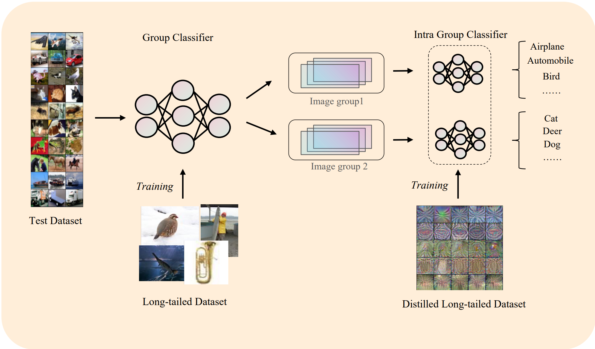

Abstract
This study addresses the challenge of long-tailed distributions in machine learning, where few categories are over-represented, and many are under-represented. We focus on datasets like CIFAR10-LT, CIFAR100-LT, and ImageNet-LT, which mimic these distributions. Traditional methods like re-sampling and re-weighting, though helpful, have limitations such as high computational costs. We propose a novel approach: applying dataset distillation to long-tailed datasets. This technique condenses large datasets into smaller, synthesized versions, ensuring efficient training with less computational demand. Our contributions are threefold. Firstly, we investigate the efficacy of dataset distillation in long-tail learning scenarios, establishing a foundational benchmark by evaluating performance on the CIFAR10-LT dataset. This research serves as a baseline for future explorations in this domain. Secondly, we delve into a comprehensive analysis of dataset distillation in long-tailed learning, proposing the ’grouping hypothesis’. This hypothesis sheds light on the nuances of data representation and model learning in imbalanced data settings, offering a new perspective on data interpretation within deep neural networks. Finally, we introduce a novel two-stage Classification strategy and a corresponding two-stage hierarchical Training method based on dataset distillation principles. Our approach not only demonstrates an improvement in classification accuracy but also significantly mitigates inter-class bias, addressing the challenges posed by long-tail distributions. Importantly, this methodology can be seamlessly integrated as a plugin to enhance future dataset distillation strategies in similar learning environments. The insights and methodologies presented in this paper hold substantial potential for advancing the state-of-the-art in dataset distillation and long-tailed learning.
Author
Boyang Zheng Lai Jiang Quanquan Peng Xuanchang Zhang
Paper
Our paper is available here.
A quick look into our method
